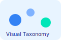

AI/ML Engineer passionate about transforming bold ideas into data-powered impact.
Bridging research and real-world deployment, across health, climate, and business, by designing scalable solutions that turn complex information into actionable intelligence.
Skilled at leading research-to-production in computer vision, deep learning, NLP, and geospatial systems. If it’s AI and it matters, I want to build it.
Turning datasets into decisions that shape the future.
3+ Years Experience
15+ ML Models Built
4 Papers Published
12% Accuracy Lift
About Me
I build intelligent systems that matter: I blend deep learning, computer vision, NLP and scalable cloud systems with a research-first engineering approach. I focus on end-to-end solutions, from model development to production deployment and visualization.
Open to: AI, ML, DS & R&D roles.
Research Focus: Deep Learning · Computer Vision · Geospatial AI · Visualization.
Strengths: Scalable ML, Model Deployment, Visualization, Cross-functional leadership.
19% reduction in donor churn via predictive analytics.
10% ROI lift through A/B testing.
Professional Profile
Education: MS Data Science, UAB (GPA: 3.9).
Location: Huntsville, AL, USA (Open to relocation).
Open to: Data Scientist, AI/ML Engineer, Data Analyst, Research roles.
Work Style: Remote, Hybrid, or On-site.
What Sets Me Apart
End-to-end ML: From data pipelines to production deployment.
Research + Industry: Published papers & real-world systems.
Cross-domain: Healthcare, climate, IT, business analytics.
Stakeholder communication: Translating ML to business value.
Expertise
Professional Experience
Virginia Tech Research Assistant, AI/ML
Aug 2025 – Present
ML pipelines for wildfire pollution, improved prediction by 12%.
Drought/fire risk models using 40-year climate datasets.
Automated satellite pre-processing with Earth Engine.
University of Alabama Huntsville Research Associate, AI/ML (ESSC)
Jul 2024 – Aug 2025
Deep learning for wildfire imagery (TensorFlow, U-Net, GRU).
Cloud workflows for NASA teams.
Deployed GAN for burn area mapping.
USRA Data Analyst, Wildfire/Deforestation
May 2023 – Jul 2024
Boosted wildfire and deforestation detection using CNN-RNN on satellite imagery.
Integrated ML results into NASA systems for faster decisions.
Enhanced pipelines for rapid disaster response.
University of Alabama at Birmingham Graduate Assistant
May 2022 – Apr 2023
Created intuitive data visualizations of virology datasets with D3.js.
Added interactive search and lineage tools for fast exploration.
Supported impactful research and team collaboration.
University of Alabama at Birmingham Annual Giving Intern
Feb 2022 – Apr 2022
Managed donor outreach campaigns and contributed to CRM data hygiene.
Analyzed donor engagement metrics to improve fundraising communications.
Produced reports and collateral used by the development team.
TCS Assistant Systems Engineer Trainee
Jan 2021 – Dec 2021
Built a scalable inventory management system using React, Fluent UI, and SharePoint.
Automated business workflows with Power Automate, reducing delays by 21%.
Delivered real-time dashboards in Power BI to accelerate data-driven leadership decisions.
Featured Projects

Visual Taxonomy Browser [ICTV Official]
Lead Developer · Paper Author
Interactive D3.js visual analytics for exploring global virus taxonomy. Built for ICTV to make taxonomy navigation intuitive for researchers and the public.